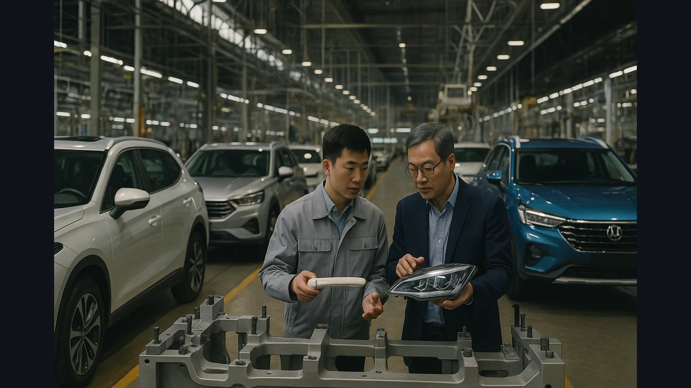
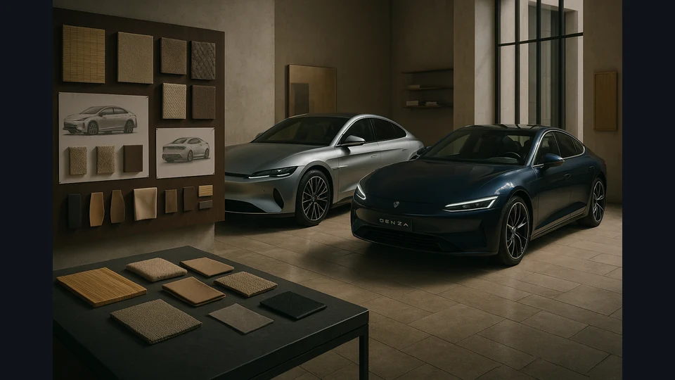

August’s industry signal: China’s automotive competition moves beyond price
Shared components. A renewed manufacturing partnership. A European design base. August’s reporting showed how the contest for automotive buyers reaches from the supplier network to the showroom.

The signal
In One View
The connection in August’s reporting was a question of where to compete and where to share. Standard components can support scale, partnerships can provide access to local capabilities, and design can be tailored to a particular buyer. AutoIntel’s interpretation: assess the industrial structure behind a vehicle alongside the badge on its bonnet.
- Parts standardization offered a lens on development cost and speed.
- GM and SAIC renewed a long-standing partnership as local development remained important.
- Denza’s European design ambitions highlighted the separate challenge of earning buyer appeal.
What August’s Reporting Revealed
An August 3 Autocar report examined how Chinese manufacturers use common components and suppliers to reduce the need for bespoke engineering. Drawing on industry interviews, it described a greater willingness to standardize parts and tooling that traditional manufacturers might customize. The subject was the production model behind the car, not simply a low retail price.[1]
The same month, GM and SAIC renewed their joint venture for another 20 years, through 2047. Electrive’s August 6 reporting described plans for closer coordination of development, supply chains and international markets. Freshfields, which advised GM, separately confirmed the extension in an August 11 announcement. The renewal was a commitment to future cooperation, not evidence that the venture’s commercial challenges had disappeared.[2][4]
These developments suggested that competition could not be read through national badges alone. An established global manufacturer could seek capabilities through a Chinese partnership while newer competitors used common industrial resources to support their own products.
Why It Matters: Choose What Deserves to Be Different
Every distinctive component needs a reason to exist. A customer may value a particular driving experience, cabin layout or material, but never notice another expensive engineering difference. The commercial question is whether the extra complexity produces an advantage that survives the buying decision.
Standardization can make room for investment elsewhere. It can also reduce a supplier’s opportunity to sell an exclusive component. That is an operating trade-off to examine, rather than a rule that the same design should be used everywhere. Requirements still vary by product, market and intended customer.
For this review, the useful shift is from comparing finished vehicles to asking how their underlying cost and development decisions were made. Similar showroom prices can sit on very different business foundations. The reports do not establish a universal cost advantage for every Chinese manufacturer.
Connecting Industrial Scale With Local Appeal
An August 18 Autocar interview with BYD design chief Wolfgang Egger added the other side of the argument. Egger described a Milan design operation intended to understand European tastes and develop ideas for Denza and BYD. Materials, personalization and a closer relationship with the local design community formed part of that ambition.[3]

A shared industrial foundation and a distinctive customer experience are therefore not necessarily competing goals. The editorial connection is that a manufacturer can seek commonality behind the scenes while choosing carefully where its products need a local identity.
But opening a design base does not prove that customers will switch brands. The interview established what BYD intended to do, not how buyers would ultimately respond. Manufacturing capability, design appeal and a successful ownership experience remain different tests.
Industry Implications
For established manufacturers, the question is which capabilities need to remain unique and which can be developed or sourced collaboratively. A partnership should be assessed against the problem it is meant to solve, along with the dependence it creates. A long agreement provides time; it does not by itself establish an effective product plan.
For suppliers, greater commonality can change where value is captured. A proposal may need to demonstrate reliability, compatibility or a clear customer benefit instead of relying on customization as its own justification. The right answer depends on the component and the manufacturer’s priorities.
For retailers, the practical task is to explain the actual product and ownership proposition. Manufacturing origin alone cannot tell a customer whether a vehicle fits their needs. Availability, service arrangements and the terms offered in the local market still need checking for each model.
Risks
The first risk is treating China’s manufacturers as one uniform business. The reports describe particular practices, partnerships and ambitions. They do not show that every company has the same economics or can reproduce another company’s results.
A second risk is assuming that common components remove complexity. Shared dependencies can still need careful validation, and a locally appealing design still has to be supported throughout ownership. Nor should a European strategy be read as confirmation that a model will reach the United States. Market access and product availability require their own evidence.
Opportunities
A useful starting point is to separate three questions: how the vehicle is developed, why the buyer would choose it, and how ownership will be supported. That makes it easier to examine where a competitor is strong without assuming success in one area proves strength in all three.
Manufacturers and suppliers can use that comparison to challenge unnecessary complexity. Retailers and industry advisers can use it to ask more precise questions about a new entrant. The opportunity is to understand the proposed advantage before accepting either a confident launch claim or an automatic dismissal.
What to Watch After August
The questions emerging from August concerned execution rather than another announcement:
- Do shared components support competitive products without weakening the features customers value?
- Do partnership plans produce vehicles suited to their intended markets?
- Does localized design translate into buyer interest and a credible ownership proposition?
- Where do cost savings persist, and where does adapting a vehicle add complexity back?
August’s connected view is that automotive competition extends across the whole path from industrial choices to customer confidence. The badge remains visible, but the decisions behind it deserve equal attention. Those decisions became the questions to carry forward, not results that August’s evidence had already settled.
Behind the analysis
Evidence & Source Notes
Retrospective analysis published in November 2026 from retained August reporting; it was not originally published in August. The collection contains 72 JSON snapshots and 181 HTML editions, including repeated runs. Parseable August source-story dates in the JSON span August 1–28. Retained snapshots span August 4–31; a later snapshot is not proof of later source-story coverage. August 29–31 source-story coverage is not established. Exact URL deduplication does not remove all syndicated overlap. Two feed versions of the parts-standardization report are treated as one source. Source checks used retained original feed text, publisher-indexed information and accessible source pages in November. The live Autocar article pages required payment during verification; the supplied archived reporting was used without bypassing that restriction. Company plans and interview claims are attributed, and later outcomes were excluded from the August narrative. This is a thematic review, not comprehensive industry coverage; connections and implications are AutoIntel interpretation.
- Chinese car makers all share parts – will the world follow?
Original interview-based reporting retained in the August feed, also carried under “China’s cost secret: sharing standard parts.” The two URLs are one evidence item. The publisher’s indexed listing confirms the August 3 date; the live article requires a subscription. The article does not establish a universal manufacturer-level cost advantage.
- SAIC and GM extend Chinese joint venture to 2047
Original publisher page checked against its retained August feed record. Describes the extension and planned cooperation. Future development and export intentions are plans, not results; the article does not assume later exports occurred.
- BYD designer Egger: Milan studio to help Denza chase Audi, BMW
Direct interview retained in the August feed and corroborated by publisher-indexed reporting. The live article requires a subscription. Egger’s description establishes design intentions, not independently measured European sales success. Both Autocar items share a publisher and should not be counted as independent publishers.
- Freshfields advises General Motors on its strategic renewal of the SAIC General Motors joint venture
Public statement by GM’s transaction adviser, used to corroborate the 20-year extension through 2047. This source was retrieved for verification rather than discovered in the uploaded feed. It is a participant statement, not independent evidence of future operating performance.
The public podcast
Take the connected view with you.
Listen to AutoIntel Weekly for the developments and connections shaping the automotive industry.
Listen on Apple PodcastsListen to the public AutoIntel Weekly show.
AutoIntel Weekly Preview · Free
See the shifts.
Connect the week.
Three cross-source signals, one unlocked analysis, and a risk-and-opportunity preview—delivered free every Monday.
Get the Free Weekly PreviewSign up using the free Weekly Preview form on AutoIntel.News. $0 · Unsubscribe anytime. The Full Briefing is a separate paid subscription.